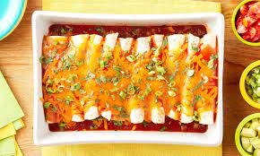

Beef Enchiladas

Description
Cheesy beef enchiladas are both spicy and savory, perfect for any meal!
Ingredients
- 1 pound ground beef
- half of one onion
- 1 jalapeno
- 1 can enchilada sauce
- 1 packet taco seasoning
- 6 small tortillas
- a lot of cheese
- 1 Tbsp vegetable oil
Steps
- Preheat oven to 400 degrees
- In a frying pan, heat oil over medium heat until shimmering, approximately 5 minutes
- While oil is heating, dice onion and jalapeno. Remove seeds and membranes from jalapeno to make enchiladas less spicy, leave them in for more spice
- Once oil is hot, add onion and jalapeno, cook until softened, approximately 3 minutes
- Move onion and jalapeno to the edge of the pan, add ground beef and break apart with spoon
- Stir onion and jalapeno into ground beef and cook until all the beef has browned
- Drain beef fat from pan, add 2/3rd cup of water and taco seasoning to pan
- Cook until liquid is mostly reduced and beef and vegetables are well seasoned, stirring occasionally
- While reducing liquid, add half the enchilada sauce to the bottom of a baking dish such as a dutch oven or casserole dish
- Once seasoned beef is done, fill tortillas with beef, enchilada sauce, and cheese. Roll the enchiladas up and place them in the baking dish on top of the enchilada sauce
- Pour the remaining enchilada sauce on top of the enchiladas and cover the sauce with a lot of cheese
- Bake the enchiladas in the oven until everything is hot and the cheese is all melted, approximately 15 minutes
- Remove the enchiladas and let them cool before serving them with a garnish of sour cream, cilantro, pico de gallo, and whatever you would like